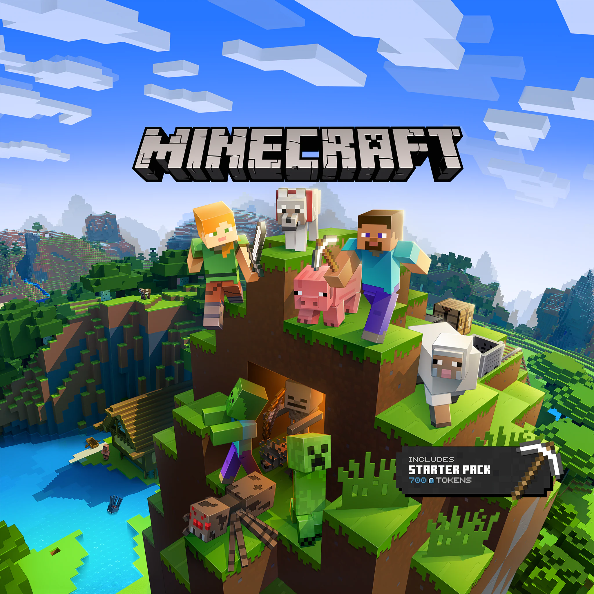
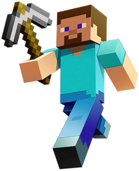
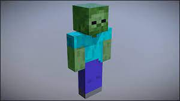
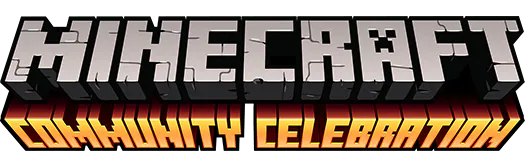

СПРОБУЙ ІГРИ MINECRAFT
майнкрафт

"Minecraft: це інді-гра в жанрі пісочниці з елементами виживання і відкритим світом. За стилем, світ гри повністю складається з блоків"

"У грі Minecraft є можливість вибрати будь-який скін головного героя, проте стандартний скін, відомий як Стів, має наступний зовнішній вигляд: Квадратна людина зростом у 31 піксель, з темно-коричневим волоссям та блакитними очима. Стів одягнений у бірюзову сорочку з короткими рукавами та сині штани.
зомбі

"неживі ворожі моби, що атакують гравців та сільських жителів, що горять на сонці"
 |
 |
 |
WELCOME TO THE MINECRAFT COMMUNITY
Minecraft community never stops amazing us with their creativity. On this page, we gather some of their best work—videos, builds, and more.
Для переходу у нашу спільноту натисни на картинку:
